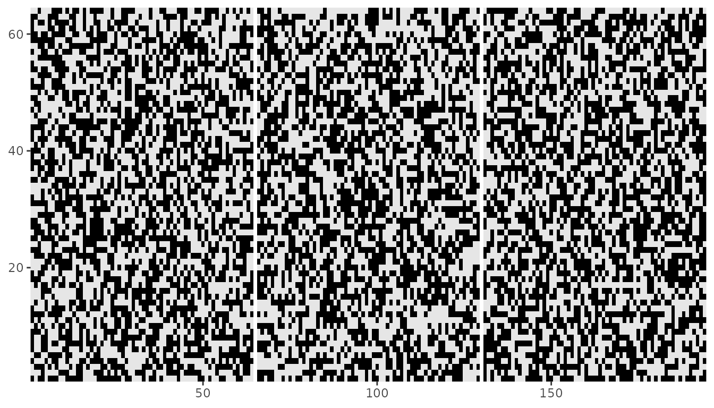
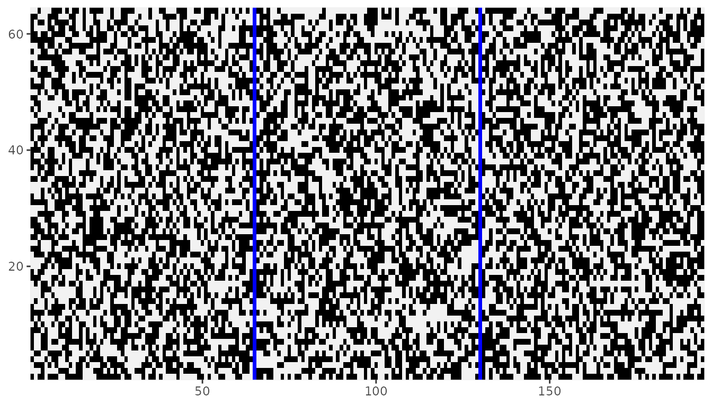
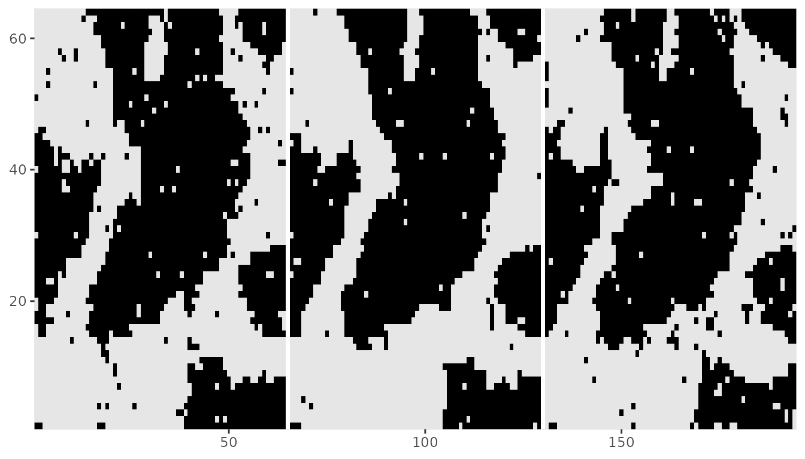
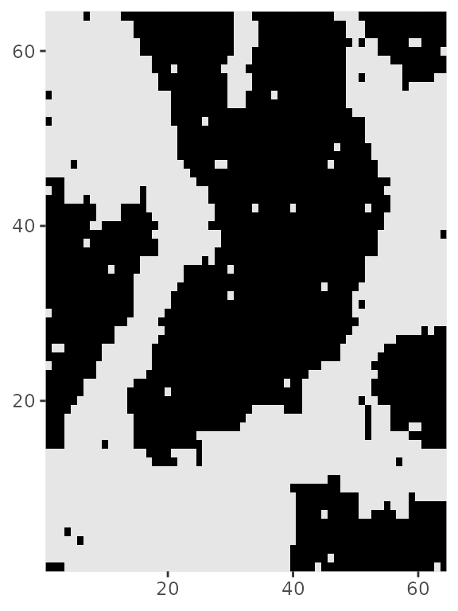
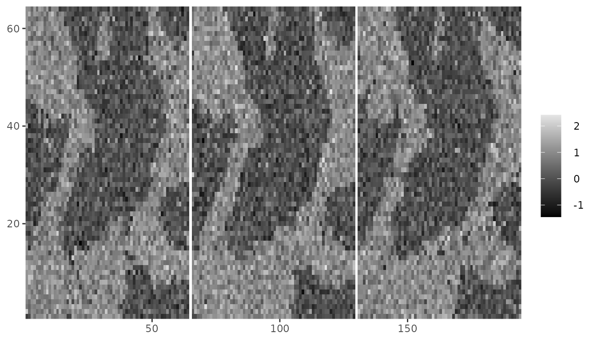
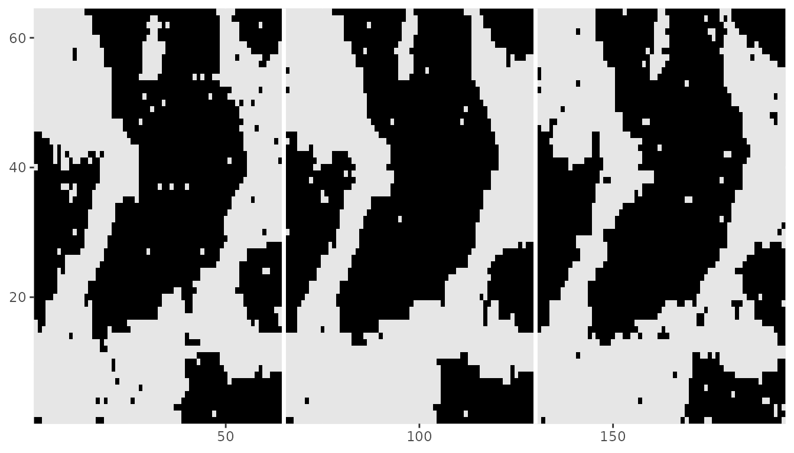

vignettes/three-dimensions-on-mrf2d.Rmd
three-dimensions-on-mrf2d.RmdAlthough mrf2d provides tools for data analysis on 2-dimensional lattices, typically representing an image, some Markov Random Fields models are also used for data on 3-dimensional lattices. One of the advantages of the non-parametric model that powers mrf2d algorithms is that is can freely describe interactions on any set of two-dimensional relative positions and it allows data to be specified on incomplete lattices.
These two features allow us to translate 3-dimensional problems to a 2-dimensional framework by properly reshaping the data and specifying interaction structures accordingly. This translation between 3d and 2d can be done without any loss in both directions, so the results of the analysis can be transformed again to the 3-dimensional case.
This vignette presents an overview of how to adapt 3d problems to the mrf2d framework with examples. After a “translation” between 3d and 2d is done, every method on mrf2d should work without major problems as the examples will illustrate, but the results have be interpreted carefully to avoid inconsistencies when generalizing.
It is important to note that most algorithms in mrf2d have their computational complexity proportional to the number of pixels, but adding more dimensions increases the number of pixels non-linearly, therefore, a performance drop may be noticeable depending on the size of the data being analyzed.
Our first challenge is to reshape a 3-dimensional array into a proper matrix to be ingested by mrf2d methods. We start by generating a 3d array that will be used as example data. For illustration purposes, we will consider an array of dimensions \((64, 64, 3)\) with binary entries.
set.seed(1)
dims <- c(64, 64, 3)
Z3 <- array(sample(0:1, prod(dims), replace = TRUE), dim = dims)
str(Z3)
#> int [1:64, 1:64, 1:3] 0 1 0 0 1 0 0 0 1 1 ...Next, we need to reshape this 3-dimensional array into a 2-dimensional rectangular grid. To achieve that, we align each slice (third-dimension) of the array side by side in the form of a wide lattice. We use NA columns between to avoid interactions involving the first dimension reach points that were projected from different slices. The number of NA columns should be the maximum absolute value of the first dimension of the interacting positions being considered.
For example, in a 3-dimensional nearest neighbor, the interacting relative positions are \((1, 0, 0), (0, 1, 0)\) and \((0,0,1)\). The first dimension elements for this set of relative positions are 1, 0 and 0, respectively. Therefore, a single column of NA values is enough to “separate” slices when projected in two dimensions.
gap <- 1
Zflat <- Z3[,,1]
for(i in 2:dim(Z3)[3]){
Zflat <- rbind(Zflat, NA)
Zflat <- rbind(Zflat, Z3[,,i])
}
str(Zflat)
#> int [1:194, 1:64] 0 1 0 0 1 0 0 0 1 1 ...Our array with dimensions \((64, 64, 3)\) was sucessfully projected in a 2d lattice with dimensions \((194, 64)\). Here \(194\) is the results of \(3 \times 64 = 192\) points in the first dimension from aligning plus the \(2\) separating columns. The resulting projection can be viewed with the dplot() function. Slices of the three-dimensional array are viewed projected side-by-side.
dplot(Zflat)
We can modify the color of NA values to highlight the columns introduced to separate slices. Here, we use the color blue.
library(ggplot2)
dplot(Zflat) + scale_fill_manual(values = c("0" = "black", "1" = "gray95"), na.value = "blue")
mrfi objects)
The next step is to specify interacting structures in the form of mrfi objects that reflect our projection of three-dimensional data into 2d lattices. Because of the way we projected the array, it is straight forward to map the three-dimension interactions to the two-dimensional structure by applying the following transformation to relative positions. Let \(D_1\) be the length of the first dimension of the array data and \(G\) the number of NA columns added in the projection, then for a pixel position \((i_1,i_2)\), the position \((i_1 + k(D_1 + G), i_2)\) maps the same position in the \(k\)-th subsequent slice. Therefore, relative positions that involves the third dimension are equivalent to long-range interactions in the 2d representation and the relations are described by the following map: \[\begin{equation}
(r_1, r_2, r_3) \rightarrow (r_1 + r_3(D_1 + G), r_2)
\end{equation}\]
In our example where the interaction structure is given by \((1,0,0), (0,1,0), (0,0,1)\), the equivalent 2d representation would be \((1,0), (0,1), (65,0)\) because our data have length \(D_1 = 64\) in the first dimension.
R3 <- mrfi(1) + c(0 + 1*dims[1]+gap, 0)
R3
#> 3 interacting positions.
#> rx ry
#> 1 0
#> 0 1
#> 65 0We now have an alternative representation for three-dimensional lattices and three-dimensional relative positions as interaction structures that perfectly fits the framework required in mrf2d.
Given this representation, one can run all method available in mrf2d the same way it would be done in 2d situations. We illustrate the usage of some methods next.
We will consider a three-dimensional Ising model: Nearest-neighbor interaction structure as used in the previous example and stored in object R3 and a parameter value of \(0.8\) for different-valued pairs in any relative position, corresponding to the "onepar" family. We start by defining the potentials array:
theta <- expand_array(-0.8, "onepar", mrfi = R3, 1)
theta
#> , , (1,0)
#>
#> 0 1
#> 0 0.0 -0.8
#> 1 -0.8 0.0
#>
#> , , (0,1)
#>
#> 0 1
#> 0 0.0 -0.8
#> 1 -0.8 0.0
#>
#> , , (65,0)
#>
#> 0 1
#> 0 0.0 -0.8
#> 1 -0.8 0.0Then, we can sample the Ising model starting from a 2d array that corresponds to a projected 3d array. We will use the Zflat object from the previous example as an initial configuration with the rmrf2d() function. It is important to ensure NA columns are fixed prior to running the sampling algorithm to avoid introducing incorrect interactions.

Note that each slice have similar patterns, which was caused by adding the \((0,0,1)\) interaction making pixels in the same position of each slice have a high probability of being assigned the same value. And we can convert back to a 3-dimensional array.
Z3_ising <- array(0, dim = dims)
for(i in 1:3){
Z3_ising[,,i] <- Zflat_ising[((i-1)*(64+gap) + 1):((i-1)*(64+gap) + 64),1:64]
}Plotting a single slice to verify that the reconstruction was done correctly.
dplot(Z3_ising[,,2])
Estimating parameters can also be done seamlessly after transforming 3d problems to a mrf2d comprehensible one. We use the previously generated 3d Ising Model sample to illustrate the estimation via Pseudo-Likelihood (recall the parameter used in the simulation was \(-0.8\)).
pl3d <- fit_pl(Zflat_ising, R3, family = "onepar")
pl3d$theta
#> , , (1,0)
#>
#> 0 1
#> 0 0.0000000 -0.8020076
#> 1 -0.8020076 0.0000000
#>
#> , , (0,1)
#>
#> 0 1
#> 0 0.0000000 -0.8020076
#> 1 -0.8020076 0.0000000
#>
#> , , (65,0)
#>
#> 0 1
#> 0 0.0000000 -0.8020076
#> 1 -0.8020076 0.0000000Hidden Markov Random Fields on 3 dimensions can also be projected to 2 dimensions using the exact same strategy. Here we add a Gaussian noise to the Ising Model sample generated.

Again, by using the 2d projection of the 3d nearest-neighbor interaction structure R3, we can fit a Gaussian Hidden Markov Random Field model with the fit_ghm() function with the transformed data.
The recovered image for the underlying field will also be a 2d projected version of the array.
dplot(denoising$Z_pred)
There are some not so obvious drawbacks in the presented approach to creating 2-dimensional versions of 3d Markov Random Field problems. The most important in our vision are:
The interaction structure cannot be directly reused for multiple datasets if the analyzed have different sizes. For example: In our \(64 \times 64 \times 3\) data, the nearest-neighbor interactions structure \((1,0,0), (0,1,0), (0,0,1)\) was mapped to the 2d version \((1,0), (0,1), (65,0)\). If new data with dimensions \(100 \times 100 \times 3\) was considered, the corresponding interacting structure would be \((1,0), (0,1), (101,0)\). This problem can be dealt with by considering an arbitrarily large number of NA columns between slices in the 2d projection, but a maximum size would be required known prior to starting the implementation.
Converting analysis results back to a three-dimensional interpretation requires a careful understanding of how the projections were obtained. For example, in the previous example, without the information on the array dimensions and the number of NA columns, it is not possible to infer that the relative position \((65,0)\) is mapping \((0,0,1)\) and, even with such information, interpreting raw long-range 2d relative positions as 3d relative positions is not an intuitive task.